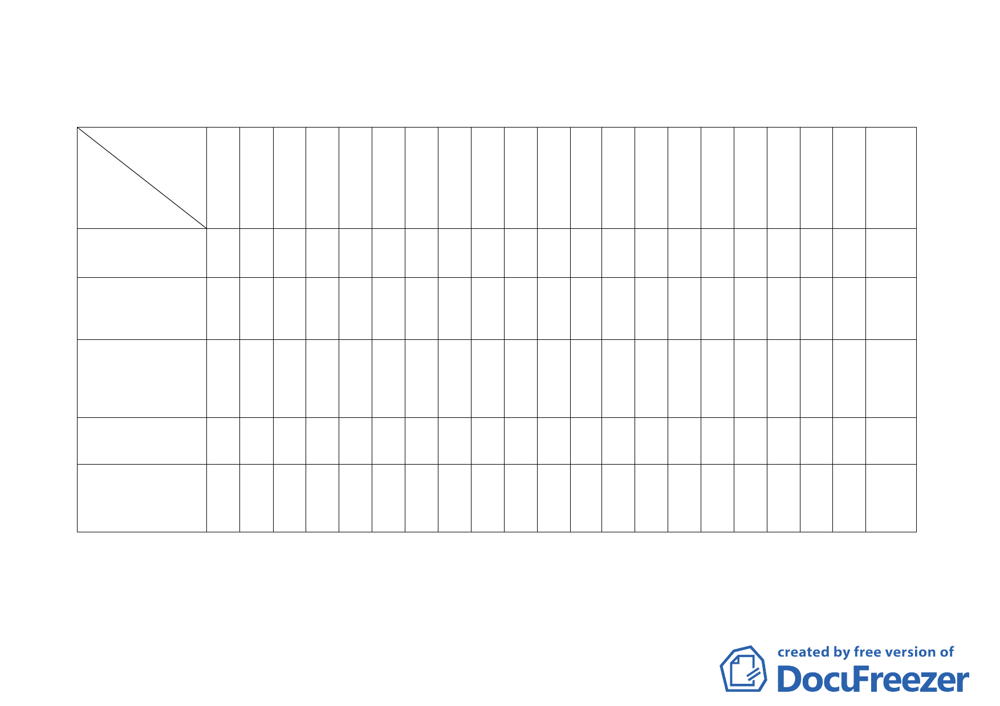

臺北市都市計畫委員會九十四年計畫案專案小組成員名單（※為召集人）
委員
案名
張 張 廖 黃 黃 蘇 顏 邊 陳 蔡 錢黃陳 張 陳 林 歐 林 紀 備
委 委 委 委 委 委 委 委 委 委 委呂委 委 委 委 委 委 委 註
員 員 員 員 員 員 員 員 員 員 員委員 員 員 員 員 員 員
桂 樞 洪 書 武 瑛 愛 泰 武 淑 學員鴻 章 威 志 晉 聖 聰
承辦人
林 鈞禮達敏靜明正瑩陶錦明得仁盈德忠吉
茹
1.臺北市北投區都市計
畫通盤檢討（主要計畫暨 ○
細部計畫）
2.變更臺北市士林區永
公路 245 巷 34 弄部分路
段住宅區為水溝用地計
畫案
3.變更臺北孔廟社教機
構用地暨孔廟東側第三
種住宅區為社教設施用 ○
地（供臺北孔廟使用）計
畫案
4.變更木柵路五段附近
地區主要計畫暨細部計
畫案
5.變更「修訂台北市主要
計畫商業區（通盤檢討）
計畫案」內有關商業區變 ○
更回饋相關規定案
○※○○
※○
○
○○○
○○ ○
○○ ○
○ ※○ ○○○ ○ ○
※○
○○
○○ ○
○○○※
○ ○○
○
9位
謝佩砡
楊儒乾
8 位 楊儒乾
9 位 陳福隆
7 位 楊儒乾
9 位 張蓉真
一○